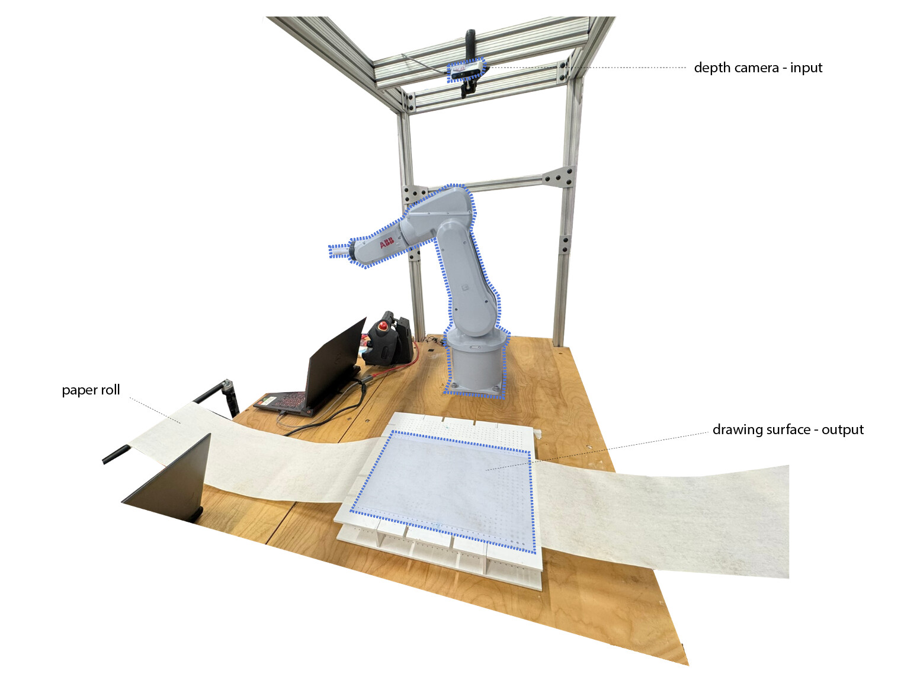
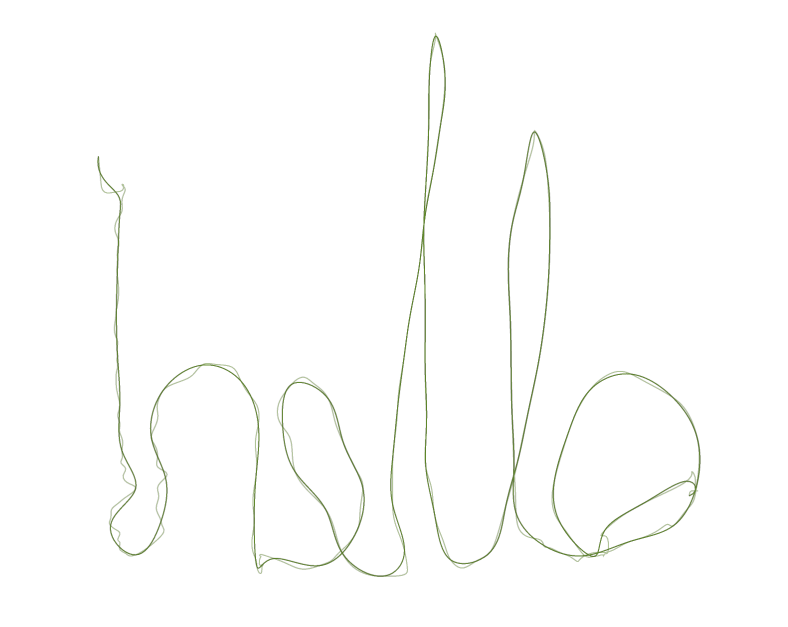
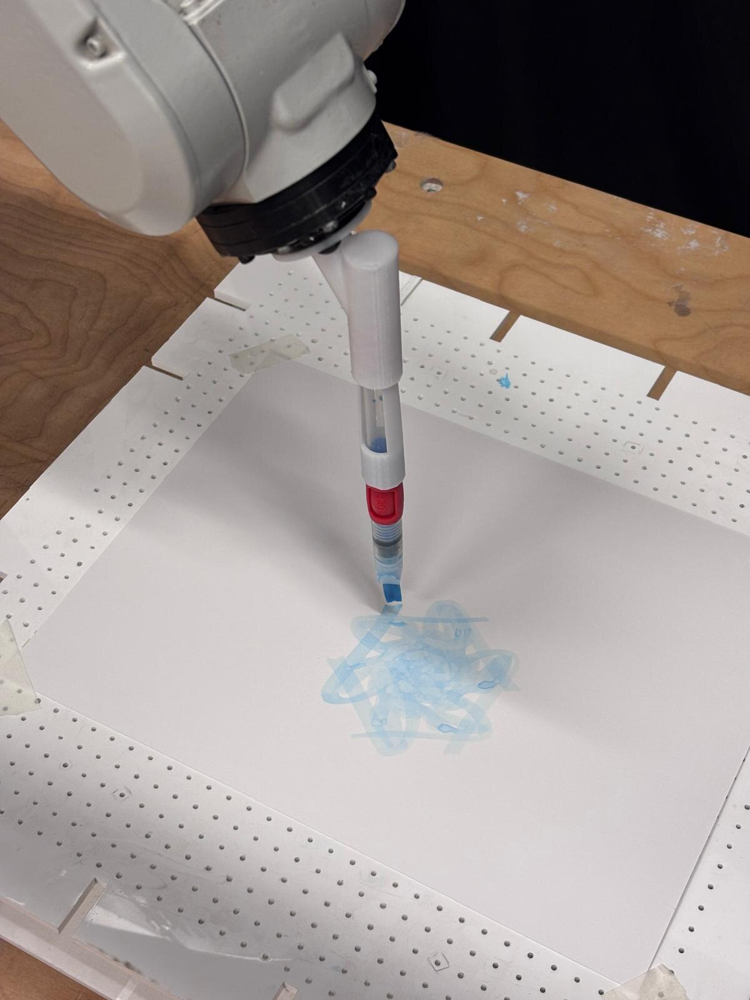
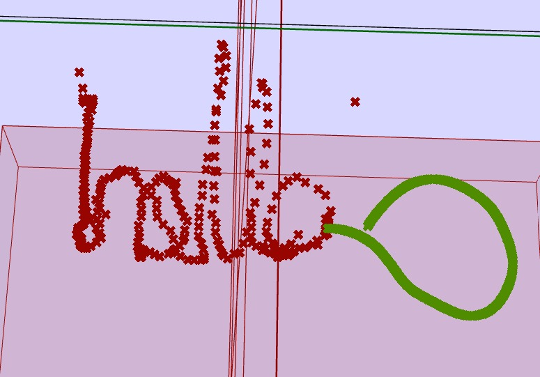
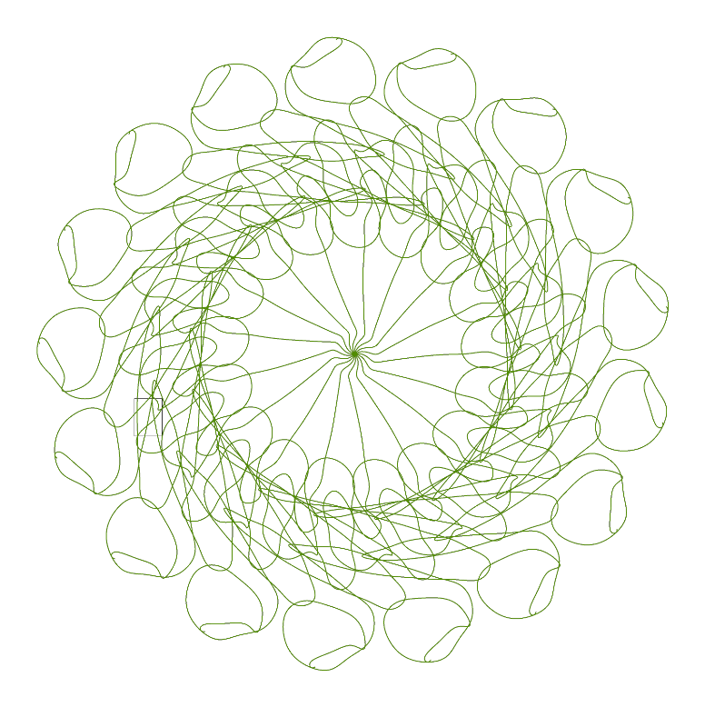
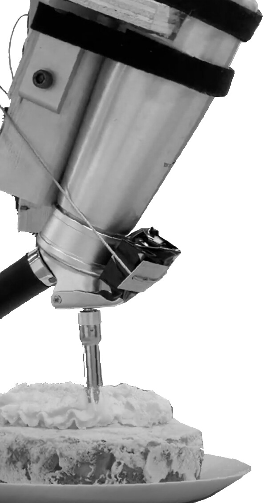
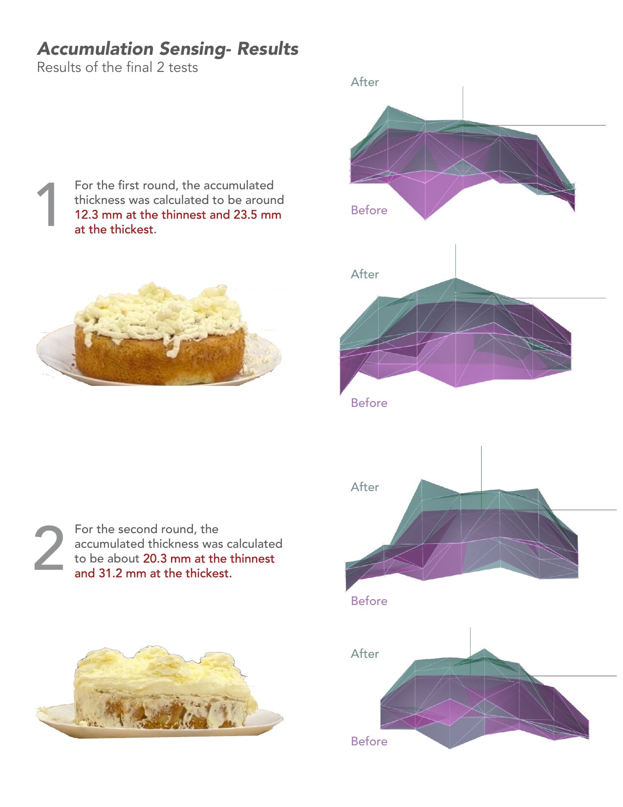

In Air Drawing, a person draws a stroke in the air and an ABB IRB 120 draws it on paper with a water brush. An overhead depth camera captures the hand, MediaPipe extracts the landmarks and gestures, and the path is sent through ROS to Grasshopper, which smooths it and drives the robot. A Victory gesture starts a drawing, a Pinch records points, and a Thumbs Up ends it.



The project ran in three stages. First the robot copied the gesture. Then the gesture was interpreted before drawing. In the last stage the list of 3D points was sent to Claude with a prompt asking for a response drawing, and the robot drew the human stroke in red and the model's response in blue. The responses stayed simple. Sending the stroke as a list of points lost most of what made the gesture expressive.
Other experiments applied a polar array to the path and used a three-pen end effector that leaves three marks in one motion.


From Foam to Frosting takes robotic spray plastering, a technique from architectural fabrication, and tries it on a cake. The end effector holds a whipped cream dispenser. A pneumatic cylinder, switched by the robot's gripper output, pulls a wire tied to the handle. Raster, linear, circular, and swirl paths were tested on a panel to tune the wait time, spray height, and speed before the final cake.
An IR distance sensor on the tool scans the surface at a grid of points before and after spraying, and the difference gives the thickness of the deposited layer. In the two final tests the layer was about 12 to 24 mm thick in the first and about 20 to 31 mm in the second. Each point used the median of 100 samples, and repeated readings at the same point still varied.

